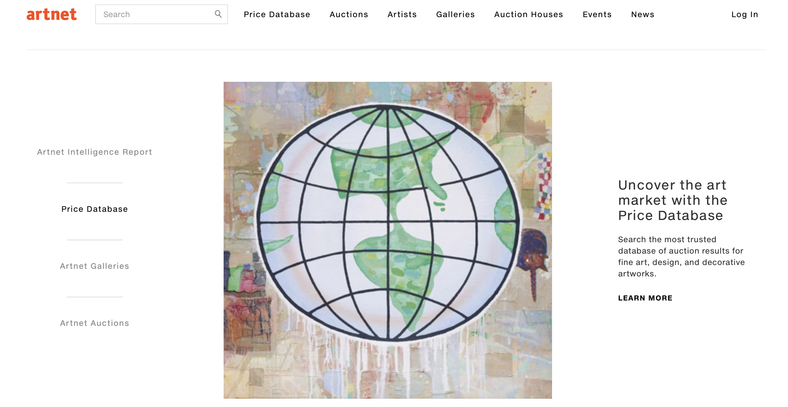
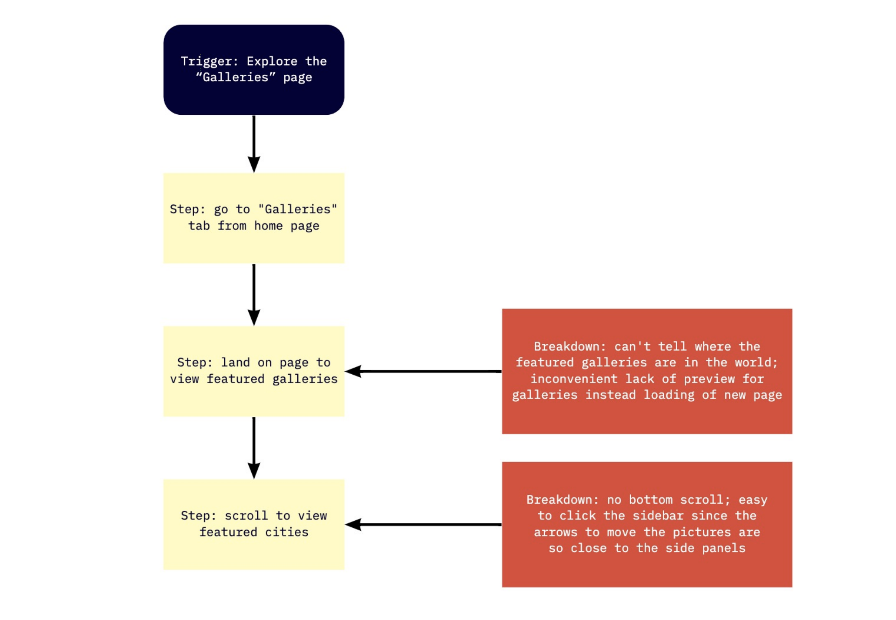
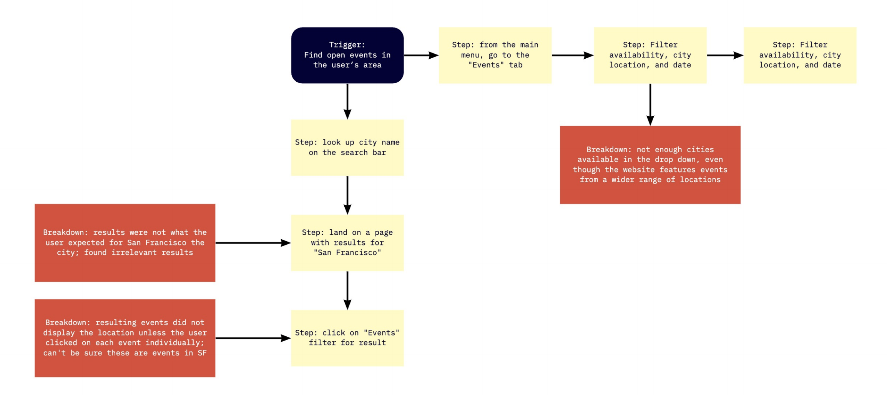
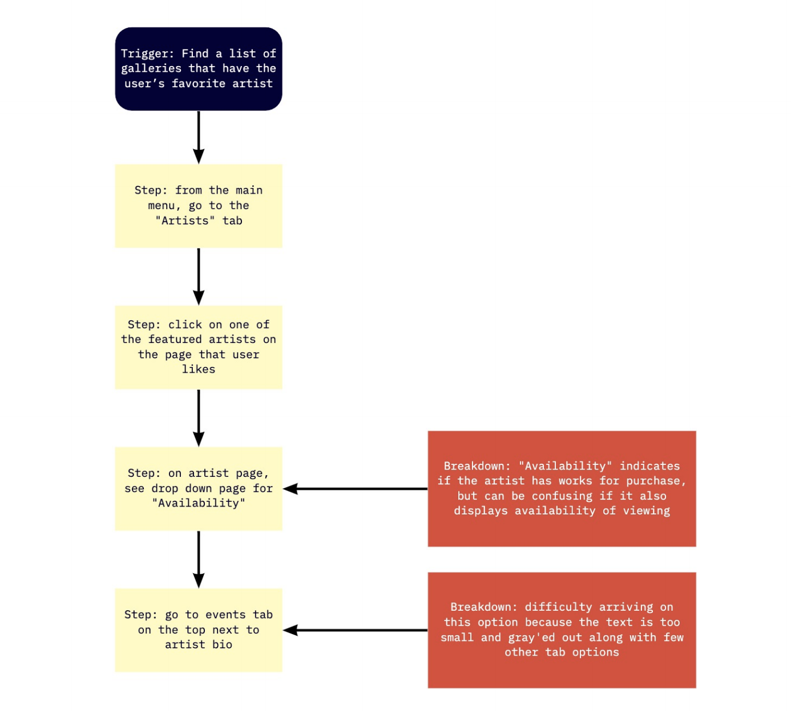

Assignment 1 - Redesigning Artnet
What is Artnet?
Artnet is an art market website which operates an international research and trading platform for fine arts, decorative arts, and design. Its core service lies in the self-operated online auction market and online gallery network. The gallery network is unique in its kind that it connects the demand and supply around the globe, representing over 35,000 artists and 2,200 galleries.
Six primary features on the website are auction, artists, galleries, auction houses, events, and news. For this project, I focused on the galleries feature, which affects the way viewers obtain information about not only where the art is, but also how to purchase it, who made it, and what works are available. Improving this feature would increase positive interaction on the platform and increased traffic from its core users. Additionaly, an easier way to navigate the website could also attract new users with developing interest in the arts.
Contextual Inquiry
Contextual inquiry is a method for gathering information about the user. It is a key step to understand the user's needs from their perspective for the design process. This can also reveal hidden aspects of work that might be implicit in the user's understanding and reveal a need for change in the product design. For this case study, one user was observed navigating Artnet to perform three different tasks.
This user has never used Artnet before, which provided a fresh set of eyes to see both negative and positive features that went unnoticed. He is interested in art and enjoys going to museums during travel. Although the core demographics of Artnet are collectors, curators, and art historians, this website could be useful for casual museum-goers like Mathias with some adjustments. I interviewed this user at his home (remotely through Zoom) as if he was searching for an exhibition to go to on a weekend.
User Profile --
Name: Mathias I.Occupation: Junior at JHU
Location: Bay Area
Task 1: Explore the “Galleries” page
The user was asked to go to the Galleries tab and get familiar with the layout and the content of the page. Since one of the most important features on Artnet is partnership with galleries and the events they host, the Gallery page should be clear to navigate and find information, like where galleries are, which artists they host, and what events are available or they have held in the past.

Issue 1
It was difficult to know in which city or country the “Featured Galleries” are in compared to other galleries that were featured by location.
This required clicking on a gallery to be redirected to a new page and it is an inconvenient step that would require the user to go back a page if
he wants to look for other galleries.
Issue 2
There is a lack of navigation scroll on the bottom for “Galleries in [City]”, compared to “Featured Galleries” that has a side and bottom scroll.
Although this isn’t a huge issue or inconvenience, the user noted that it would be more helpful to have both options for the ease of navigation.
Task 2: Find open events in the user’s area
The user was asked to find a page to view all open exhibitions in the user’s area. Under the “Events” page, artnet has a feature to sort events by type of event, dates, and location. Location is available for 13 most prominent art cities around the world, such as New York, Paris, and Hong Kong. The user was notified of this limited area service and was asked to search for San Francisco, which is the closest featured city to his area.

Issue
The first impulse for the user was to use the search bar and look up “San Francisco”. The search results were unclear, with irrelevant
gallery locations like Madrid and Barcelona coming up as the first two results. Although results were sorted for types of data,
such as “Artworks”, “Artists”, “Events”, and more, when the user clicked on “Events”, it was unclear that all the results actually took place in San Francisco.
Furthermore, it was showing all relevant events related to San Francisco, not just the currently open ones the user could visit.
Task 3: Find a list of galleries that have the user’s favorite artist
The user was asked to find a list of galleries that currently hold any works by the user’s favorite artist. For the purpose of the task, it did not matter whether it was for the purpose of selling or display. Having a well-organized artist page is important, because the value and popularity of an art work depends heavily on who the artist is.

Issue
When the user arrived on the artist’s page, the leftmost panel had a dropdown option to sort the works based on availability,
object type, and period. The user had a difficulty going to the Events tab on the top to view exhibitions. A feedback from the user was that
having an option to see works on display from the landing page of the artist along with availability for purchase would be more intuitive than to
move to a new tab for events, where currently ongoing exhibitions were displayed along with ones no longer on display.
Sequential Model
  Paper-based Prototype
Paper-based Evaluation
Task 1: Explore the “Galleries” page
- Finding information about where the featured gallery is
- Bottom scroll for cities for added option to view other images
- Pop up feature to view overview information about a gallery to quickly view information
- The press release portion is too long and hard to read. This section should be removed or shortened with bigger text.
- For the preview of images, there could be less pictures but bigger images and texts.
Task 2: Find open events in the user’s area
- Clarify event type user is looking for under events page (exhibition, auction, art fair, etc.) under Events page
- Add advanced search option for the search bar that can detail the query
- Allow user to filter from advanced search result, increasing accuracy for what the user is looking for
- None!
Task 3: Find a list of galleries that have the user’s favorite artist
- Add "On-View" as an availability on the left hand side menu
- Replace the long biography that makes the website look more cluttered with a gallery bar to view the artist's most notable works
- Pop up feature to view overview information about the artist's work without going into the image page
- The pop up feature should also indicate where the work is, if it is publicly owned or on a public listing
- Having two tabs that says "Event" on the top menu is confusing. Should either name them differently or make it more clear to the user that one event leads to the general event page and the other is just for the events concerning the artist's page
Summary
I had a lot of fun evaluating Artnet. It's a website I often visit when I'm researching for a paper or I'm interested in lesser-known events hosted at smaller galleries. The user I interviewed for Contextual Inquiry noted that the general aesthetics of the website is well established, with distinct color scheme and overall minimal design. However, there are some features that can be improved and clarified for first-time users, as shown by the paper-based prototype I created. Overall, the user who evaulated the prototype noted that having pop up descriptions for images is a nice way to increase user interaction with the website that can allow easier time for users to check out artists, works, or events that they are scrolling past.